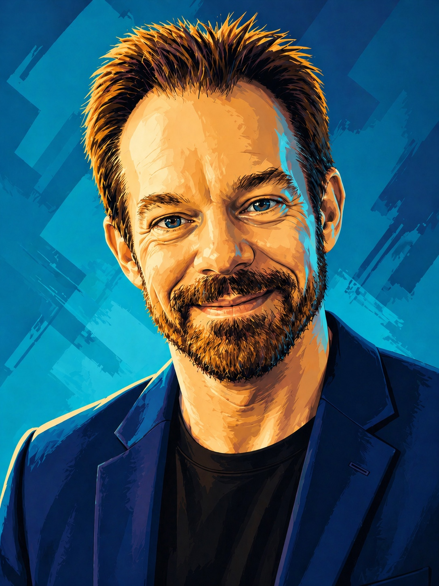

AI
Systems.
Production AI systems and workflows built across Claude Projects, GPT Projects, and Anthropic API deployments. Brand voice and campaign production. Market intelligence with kill-switch discipline. Autonomous multi-channel marketing. Satellite image analysis for mineral prospectivity. Every system keeps a human in control of the decisions that matter.
Agency689
Writing Systems
Brand Voice · RAG · Campaign AI
Sunset Marquis · Agency689
Traveler Guitar
Agency work creates constant demand for strong first drafts across email, banners, ad creative, landing pages, and social copy — with zero tolerance for voice drift. Generic AI output is the enemy. Volume without precision just produces more wrong work faster.
Brand context files, RAG-retrieved voice samples, SKILL.md governance, and persona specifications are assembled before any draft is generated. The system produces multiple first drafts, then routes them through a standards AI for quality and voice checks before anything reaches a human for approval.
Context ingestion → multi-draft generation → standards-AI critique loop → Telegram approval routing → human edit and publish. Outputs span email campaigns, banner copy, landing pages, ad creative, campaign concepts, and social posts. Nothing ships without human sign-off.
Sunset Marquis: high-frequency promotional and email copy inside a brand voice that took years to build. Agency689: proposals generated from discovery notes and project requirements, structured against years of precedent. Traveler Guitar: systems thinking extended into visual ideation — creating campaign worlds where the product lives without losing the brand's sense of adventure.
Used daily across Agency689 client work. The practical version of AI-assisted creative: faster iteration, tighter review loops, and human approval before anything publishes.
VRT2 · CLAW
Stock Intelligence Agent
27 Streams · 23 Hypotheses
Kill-Switch Architecture
Markets generate data at a pace no individual analyst can track. EDGAR filings, earnings transcripts, analyst revisions, macroeconomic feeds, and price signals all move simultaneously. Manual synthesis lags. Bad signals with high weights cause outsized damage. A system without governance is worse than no system at all.
Node.js + SQLite backbone. Claude Haiku handles routine daily reviews; Claude Sonnet handles advanced analysis. Ingests Finnhub, EDGAR, earnings transcripts, analyst revisions, and macro feeds daily. Claude synthesizes everything into structured intelligence briefs. Signal weights are automatically adjusted based on observed hit rates over time.
Every signal change moves through five verification states: UNVERIFIED → SYNTAX_OK → SQL_VERIFIED → RUNTIME_VERIFIED → PRODUCTION_VERIFIED. New signals receive 0.50× weight until proven. Sub-55% hit rates (n=15) trigger automatic deactivation. A 20% drawdown fires a system-wide kill-switch. Nothing trades automatically.
Launchd scheduling on macOS. Historical backfill from 2022-present (162,439+ price rows). Six hypothesis tiers: fundamentals, peer dynamics, AI infrastructure, VRT-specific factors, macroeconomics, and emerging research. COMPOSITE_BULL averages +3.65% return over 3-day holds. Everything is logged, versioned, and auditable. The changelog reads like a system's operating history.
The transferable design pattern: ingestion, hypothesis testing, composite scoring, human review, audit trail, continuous improvement. The SSIA white paper documents the full architecture.


VRT2 and the SSIA white paper are included as technical architecture and systems-design samples, not as investment advice. The S1_LAG hit rate and COMPOSITE_BULL returns are backtested figures, not guarantees of future performance.
BookLite · Auto
Autonomous Book Marketing
6 Platforms · Claude Brain
Human Approval Queue
Indie authors need consistent multi-channel presence. Platform-native copy for Reddit, X, Instagram, Facebook, Goodreads, and KDP all have different voice expectations, character limits, and community norms. Maintaining all six manually is a second job. Generic AI copy, posted without human review, does more damage than nothing.
A single Claude brain reads book metadata — title, author, target audience, ASIN — and generates platform-specific copy for all six channels in one run. OAuth2 and OAuth 1.0a handle platform authentication server-side. No credentials hit the frontend. KDP ranking data feeds back in via Rainforest API or CSV upload for attribution learning.
Local Node.js server with a browser dashboard. Single HTML frontend, single server backend — no build step required. Server health checks show which channels are live. Attribution tracking identifies which content and which channels convert to sales, then feeds those learnings back into the next generation cycle.
BookLite is the open-source Lite release of the internal Agentic689 book and music marketing system. It runs one book, one author voice, one Claude brain, and posts to six platforms. The full production version handles multiple titles, multi-artist configurations, and cross-platform attribution at scale. The Lite release strips to the essentials so the architecture is readable.
Built on the Anthropic Claude Agent SDK. MIT licensed. The white paper covers the full internal architecture the Lite version was derived from, including the multi-title production system.

AuScan · Satellite
AI Gold Prospectivity
Claude Vision · 5 Sensors
USGS MRDS Validated
Traditional mineral exploration is expensive, slow, and requires specialist teams in the field. Satellite imagery covering every inch of Earth's surface is freely accessible but opaque to non-specialists. The gap between available data and actionable prospectivity intelligence is a systems problem — not a data problem.
AuScan trains Claude Vision on the spectral and structural signatures of ten world-class gold deposits — Witwatersrand, Carlin Trend, Kalgoorlie, and others. Multi-sensor data — NASA EMIT hyperspectral, Landsat thermal, ASTER mineral mapping, Sentinel-2 vegetation indices, and ESRI RGB — is assembled into terrain fingerprints for each deposit.
In testing, the system scored a HIGH-confidence hit at 42.609°N, −119.299°W — Oregon's Pueblo Mining District, a documented former gold producer. Cross-referenced against the USGS Mineral Resources Data System. Search grids are configurable from 2×2 to 5×5 across 10–100 mile radii. Patterns and results persist across sessions.
React-based browser application running in a Claude.ai artifact environment. Single-endpoint design — no CORS, no separate auth layer. Browser-native storage for session persistence. USGS MRDS integration via Claude's knowledge base for cross-referenced validation. Configurable search parameters allow rapid iteration across different regions and deposit types.
The transferable insight: domain expertise can be distilled into a vision system that scales to any geographic target. The white paper covers the full methodology, sensor pipeline, and validation results.


AdamCagle.com
Portfolio System
Static Site · AI-Assisted Build
Shared Shell · GitHub + Vercel
Writing, Work, Systems
A working portfolio has to do more than display work. It has to prove range quickly, hold a distinctive voice, surface technical credibility, and make the site itself feel like evidence. A generic template would flatten the very thing the site is meant to sell: taste, structure, speed, and judgment.
A static front end organized around reusable site-shell infrastructure, shared theme controls, page-specific animation hooks, and hand-tuned content pages. The architecture keeps the site fast and portable while letting each page carry its own rhythm: portfolio, writing samples, brand voice, resume, contact, and AI systems all feel related without becoming repetitive.
AI-assisted iteration handles structure, code passes, copy refinement, and deployment hygiene, while human direction controls taste, claims, hierarchy, and final judgment. The loop is simple: define the intent, generate a clean implementation, inspect the page, tighten the language and spacing, then ship through GitHub.
The repo uses plain HTML pages with shared CSS and JavaScript instead of a heavy framework. site-shell.js owns the persistent navigation and footer. theme.js preserves light/dark mode. Page scripts add movement only where the experience needs it. Sitemap, robots, LLM-readable context, archives, alpha staging, and Vercel configuration all live beside the production files.
The transferable pattern is the same one used across the agent work: strong source material, strict structure, reusable system pieces, fast iteration, and human approval before anything public ships.


Other Systems
Additional workflows & agents
The production-scale predecessor to BookLite. Multi-title, multi-artist, multi-channel closed loops for KDP titles and music releases. Platform-native copy for Reddit, Instagram, Facebook, X, and TikTok. Real sales and streams tracked through platform APIs. Attribution feedback, channel re-weighting every cycle, and human approval queues between every action.
Validated persona scaffolding with SKILL.md governance. Produces structured persona specifications with hard governance rules and voice constraints — defining what the AI can say, how it can say it, and where it must defer to human judgment. Used for brand persona development, editorial governance, and AI-assisted copy systems across Agency689 client work.
Multi-asset anomaly correlation engine with dashboard UI. Takes complex cross-market signal data and presents it in a form that supports human decision-making. Proof of systems thinking applied to data-to-narrative design: the goal is a human making a better-informed call, not a system making a call on their behalf.
The studio's own website — designed, written, coded, and shipped by one of the agents. Single self-contained HTML file. Cloudflare Pages Function for the contact form. No framework, no build step. Deploys in five seconds from the terminal with one command. The storefront is itself an honest sample of the work these systems produce.